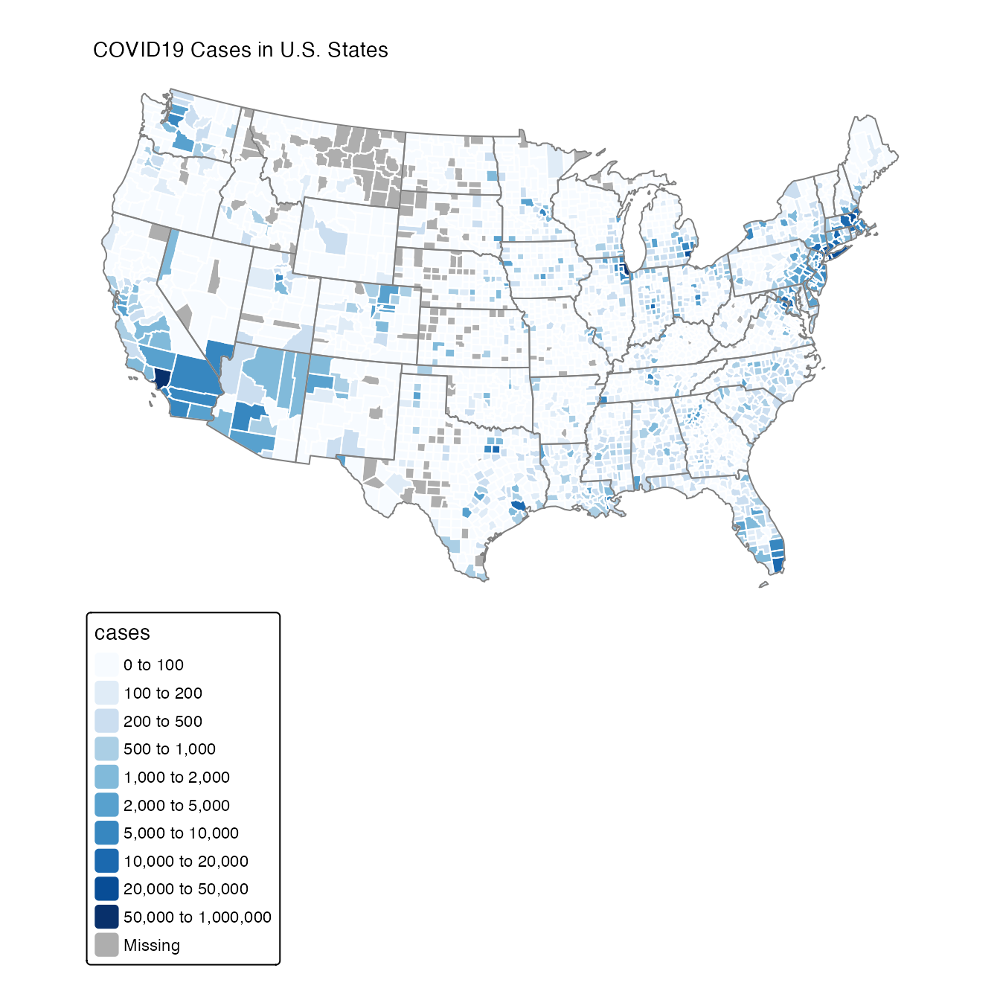

vignettes/MazamaSpatialPlots.Rmd
MazamaSpatialPlots.RmdThe MazamaSpatialPlots package provides plotting functionality to create production-ready maps for US state and county-level data. It builds on the tmap package, integrating the data with spatial datasets from MazamaSpatialUtils. High-level plotting functions make it easy for users to create beautiful chloropleth maps. Since these high-level functions are built using ggplot2, users familiar with ggplot2 can easily enhance the returned plot objects to create custom plots.
This package is designed to be used with R (>= 3.5) and RStudio so make sure you have those installed first.
Users will want to install the devtools package to have access to the latest version of the package from GitHub.
The following packages should be installed by typing the following at the RStudio console:
# Note that vignettes require knitr and rmarkdown
install.packages('knitr')
install.packages('rmarkdown')
install.packages('MazamaSpatialUtils')
devtools::install_github('MazamaScience/MazamaSpatialPlots')MazamaSpatialPlots’ plotting functions require spatial polygon data to plot the shapes of states and counties. These spatial datasets are provided by MazamaSpatialUtils and can be installed by running the following in the RStudio console:
library(MazamaSpatialUtils)
dir.create('~/Data/Spatial', recursive = TRUE)
setSpatialDataDir('~/Data/Spatial')
installSpatialData()Currently, MazamaSpatialPlots contains high level functions for creating choropleth maps for county or state level data:
countyMap() - plot a choropleth map for county level data. Uses the USCensusCounties_02 dataset for spatial polygons.stateMap() - plot a choropleth map for state level data. Uses the USCensusStates_02 dataset for spatial polygons.Additionally, MazamaSpatialPlots provides two example datasets formatted to use with the package’s functions:
example_US_stateObesity - state level obesity rateexample_US_countyCovid - county level COVID19 cases and deathsIn this example, we create a map showing the obesity rate for each state in the United States.
library(MazamaSpatialPlots) stateMap( data = example_US_stateObesity, parameter = 'obesityRate', palette = 'BuPu', breaks = seq(20, 38, 3), stateBorderColor = 'white', title = "Obesity Rate in U.S. States" )
In this example, we create a map showing COVID19 cases across all of the counties in the United States.
countyMap( data = example_US_countyCovid, parameter = "cases", breaks = c(0,100,200,500,1000,2000,5000,10000,20000,50000,1e6), countyBorderColor = "white", title = "COVID19 Cases in U.S. States" )
